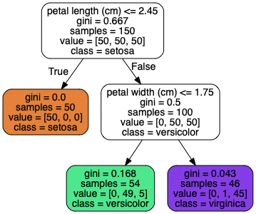

6.6 基尼不纯度¶
默认使用基尼不纯度进行测量，不过可以将超参数criterion设置为entropy来选择使用熵的形式进行测量。
公式6-3
\[H_i = - \sum_{k=1}^n p_{i, k} log_2(p_{i, k}) \tag{6-3}\]
其中\(p_{i,k} \not= 0\)
图6-1中的深度为2的左侧的节点的熵的计算如下：

\[- \frac{49}{54} log_2( \frac{49}{54}) - \frac{5}{54} log_2( \frac{5}{54}) \approx 0.445
\]
其实，大多数情况下，基尼不纯度和熵并没有什么大的不同，产生的树都很相似。基尼不纯度的计算速度略微快一些(这是由于基尼不纯度无需计算log2)，所以它是个不错的默认选择。它们的不同在于，基尼不纯度倾向于从树枝中分裂出最常见的类别，而熵则倾向于生产更平衡的树。
关于二者的比较可以参考: https://sebastianraschka.com/faq/docs/decision-tree-binary.html